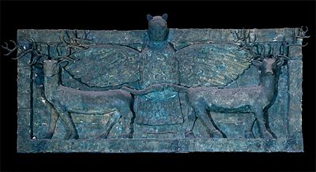

The Challenge -
Copper frieze

This remarkable object is made of plates of copper which were fixed over wood and bitumen. It shows the lion-headed eagle Imdugud and comes from the temple of the goddess Ninhursag at the site of Ubaid. It was discovered at the base of the temple platform but it may have originally decorated the entrance. The frieze dates to around 2500 B.C.
|
|